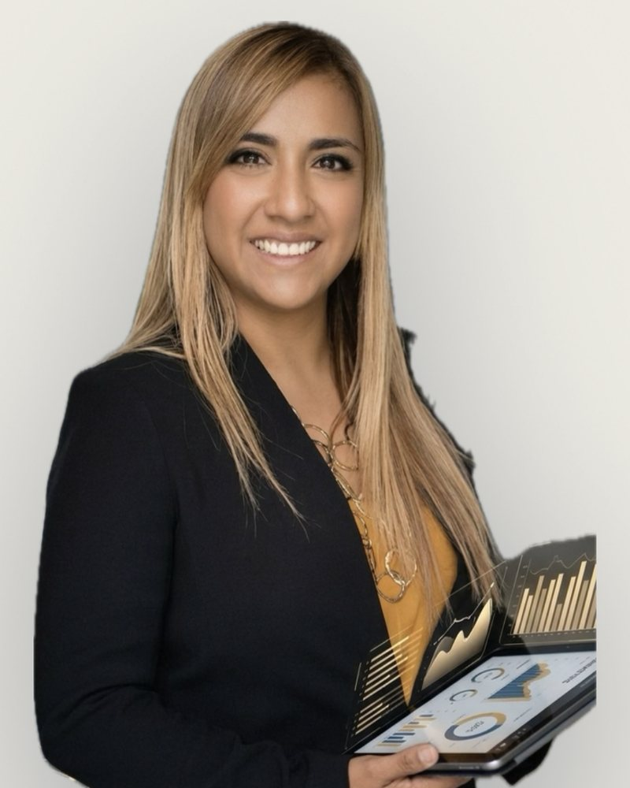
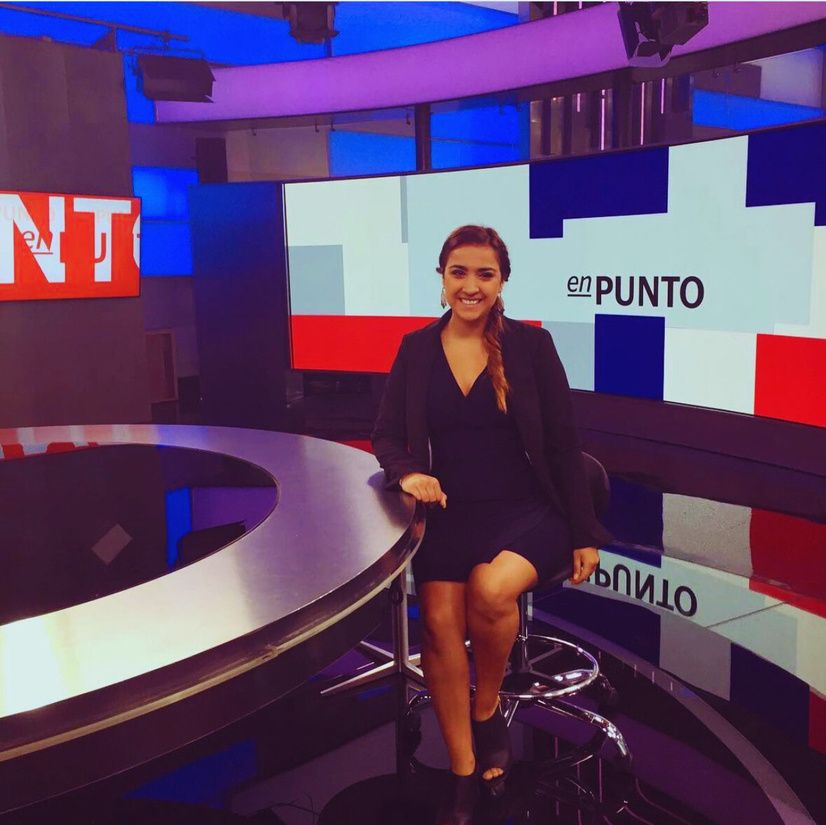
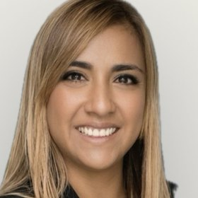
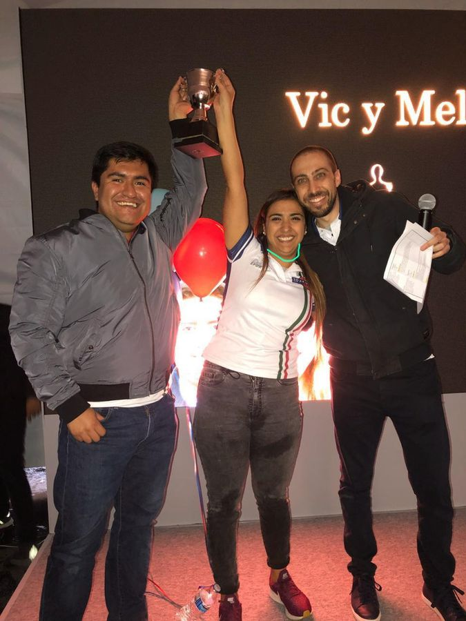
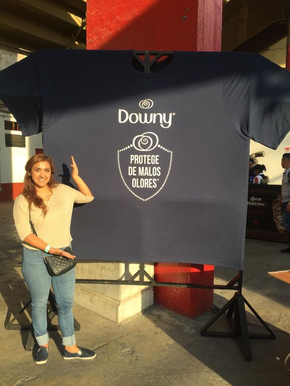
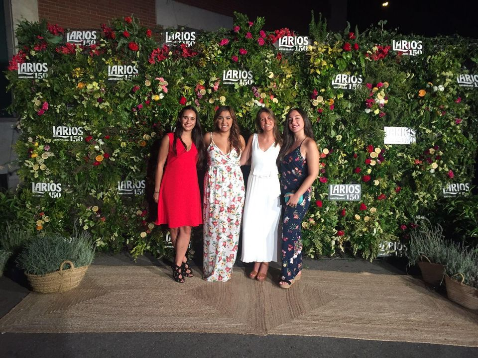
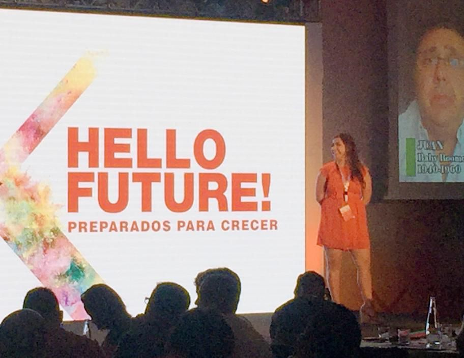
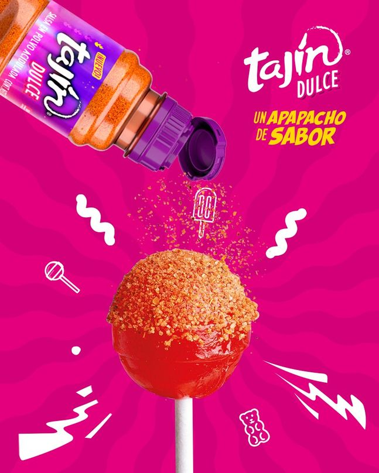
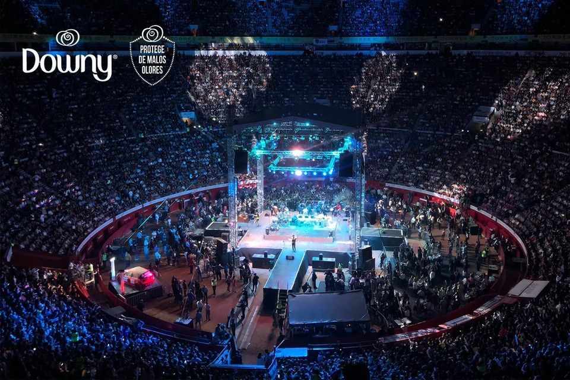
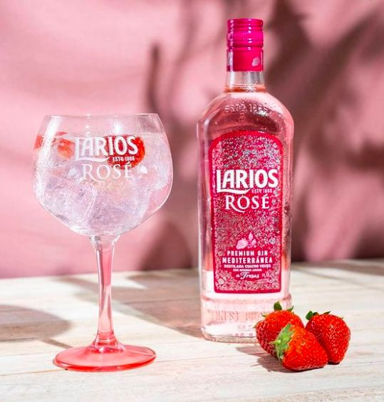

01 / EST
Estrategia
Convertir una necesidad de negocio en un plan con mercado, propuesta de valor e indicadores claros.
Convierto presupuesto en crecimiento de marca. 15 años en P&G, Tajín y spirits.

Convierto presupuesto en crecimiento de marca.Nora Melissa Benavides Esparza
Arrastra las piezas
· Recorre el expediente

Lidero estrategia de marca y dirección de contenido, con más de 15 años en marcas globales de consumo masivo.
He dirigido comunicación y media digital en contextos multiculturales, en Procter & Gamble, Empresas Tajín y marcas de spirits en España, construyendo campañas visibles que fortalecen posicionamiento y alcance.
Aplico sistemas creativos que integran data e inteligencia artificial con criterio humano, para sostener la coherencia de marca y escalar impacto sin perder identidad.
Hoy dirijo tres compañías propias: XAMANS 360, Marketing Cliniq y Yournal. En las tres uso la IA como herramienta de trabajo diaria, de la estrategia al producto.
Founder de XAMANS 360, Marketing Cliniq y Yournal
Head of Media Communication en Tajín · Media Communication & Digital Manager en P&G · Marketing Intelligence & PR en España
Maxxium · Nielsen · IMS Health
Ponente en IA aplicada al marketing
Monterrey · Tulum · Ciudad de México · Madrid
Qué valor ofreces, a quién y cuánto inviertes para llegar. Empiezo por el diagnóstico, porque un buen diagnóstico es la base de cualquier estrategia.
Lo que no se mide no se mejora. Por eso cada plan que diseño llega con sus indicadores desde el primer día.
Cómo trabajo · elige un modo
Mi enfoque empieza por escuchar al cliente y comprender sus objetivos de marca. Con los momentos de verdad de P&G leo qué busca, qué elige y qué recomienda cada persona.

Toca para reaccionar
Además del marketing, me apasiona la neurociencia: me interesa cómo funcionan las personas por dentro, y eso se nota en cómo entiendo a cada consumidor.
Me gusta conocer nuevas culturas y aprender de cada lugar y de su gente.
a través de mi lente




Desliza →
Quiero que las marcas crezcan con estrategia, con datos y con una propuesta que la gente reconozca.
Hagamos algo que crezca.Estas son las áreas en las que trabajo y las habilidades dentro de cada una.
Convertir una necesidad de negocio en un plan con mercado, propuesta de valor e indicadores claros.
Decidir cuánto invertir, dónde y cuándo, con el retorno como criterio.
Darle a una marca una identidad, una voz y una promesa que la gente reconozca.
Flujos con agentes de IA para estrategia, contenido, análisis y desarrollo de producto.

tajin-dulce/
downy/
larios/Módulo 5 del Diplomado en IA para Creativos. Desarrolló el contenido con libertad de cátedra: casos de marcas globales, simulaciones en equipo y prompts para Claude y Perplexity, con cada dato verificado.
Maestría (MSc) con Beca Eiffel del gobierno francés.
Licenciatura en la Universidad Regiomontana con programa en ESC Rennes.
Professional Master in AI & Innovation.
¿Tienes una marca, una clínica o un equipo que necesita una estratega con visión de negocio? Lo siguiente bueno empieza con una conversación.
Monterrey y Tulum, México
¡Hola! Gracias por pasar. Usa el dock de abajo para recorrer el expediente.